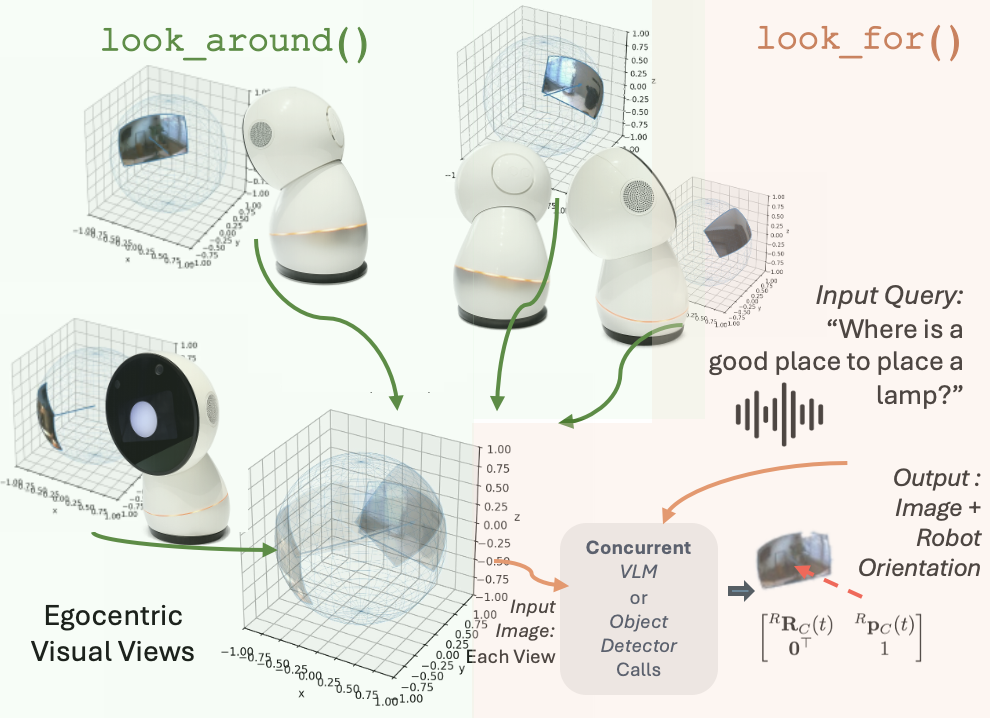
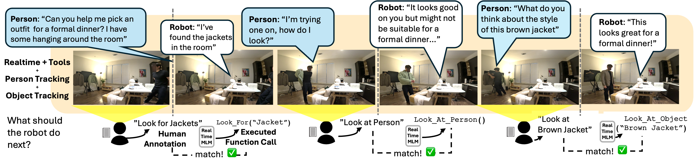

Situated embodied conversation requires robots to interleave real-time dialogue with active perception: deciding what to look at, when to look, and what to say under tight latency constraints. We present a simple, minimal system recipe that pairs a real-time multimodal language model with a small set of tool interfaces for attention and active perception. We study six home-style scenarios that require frequent attention shifts and increasing perceptual scope. Across four system variants, we evaluate turn-level tool-decision correctness against human annotations and collect subjective ratings of interaction quality. Results indicate that real-time multimodal large language models and tool use for active perception is a promising direction for practical situated embodied conversation.
A user asks an assistant to visually identify a houseplant brought into view and then provide practical care guidance. The same situated conversation recipe deployed across two robot platforms (Jibo, Reachy Mini) and two real-time backends (OpenAI Realtime, Gemini Live).
Jibo — OpenAI Realtime
Jibo — Gemini Live
Reachy Mini — OpenAI Realtime
We organize the system around two main components: (1) a real-time multimodal language model (e.g., OpenAI Realtime / Gemini Live) that handles streaming audio/video and conversational mechanics, and (2) function calling for tool-mediated robot actions for attentional control and active perception. The LM decides what to say, what to look at, and when by interleaving conversation generation with structured tool calls:

We designed six home-style interaction scenarios that progressively increase the demands on visual grounding and perceptual scope, from person-only understanding to room-scale multi-object reference with scene changes.
| Task | Goal | Duration | Vision | Person | Object(s) | Map |
|---|---|---|---|---|---|---|
| Posture Coach | Identify posture issue; coach and verify improvement. | 01:39 | Y | Y (1) | N | N |
| Whiteboard | Solve a trig problem using whiteboard diagram. | 02:12 | Y | Y (1) | Y (1) | N |
| Lamp Placement | Choose a lamp location using a room sweep. | 02:05 | Y | Y (1) | Y (1) | Y (1) |
| Plant Doctor | Find plant and diagnose plant health. | 02:12 | Y | Y (1) | Y (1) | Y (1) |
| Outfit Check | Find outfits in room, compare options on-body. | 02:21 | Y | Y (1) | Y (2) | Y (1) |
| Pack / Find Objects | Locate items via scan; re-scan after changes. | 02:03 | Y | Y (1) | Y (3) | Y (2) |
Table 1: Task descriptions and visual requirements. Person, Object(s), and Map specify which visual entities and environment sweeps are required. Counts in parentheses give the number of distinct targets or map updates.
We evaluate four system variants to isolate the contribution of key system elements:

We compare the model's tool-call decisions against human "should-do-next" annotations. Both full systems achieve similar turn-level tool-decision correctness: OpenAI Realtime attains 0.72 macro-averaged accuracy with 0.88 precision and 0.62 recall, while Gemini Live reaches 0.77 accuracy with 0.84 precision and 0.60 recall. Ablated variants show expected degradation.
| Condition | Overall | look_at_person | look_at_object | look_for | use_vision | ||||||||||
|---|---|---|---|---|---|---|---|---|---|---|---|---|---|---|---|
| Acc. | P | R | Acc. | P | R | Acc. | P | R | Acc. | P | R | Acc. | P | R | |
| OpenAI Realtime | 0.72 | 0.88 | 0.62 | 0.63 | 0.52 | 1.00 | 0.70 | 1.00 | 0.19 | 0.93 | 1.00 | 0.70 | 0.64 | 1.00 | 0.60 |
| OpenAI w/o Object | 0.28 | 0.50 | 0.26 | 0.42 | 1.00 | 0.42 | — | — | — | — | — | — | 0.70 | 1.00 | 0.64 |
| OpenAI w/o Person | 0.48 | 0.54 | 0.35 | — | — | — | 0.69 | 0.62 | 0.40 | 0.71 | 0.53 | 0.53 | 0.51 | 1.00 | 0.48 |
| Gemini Live | 0.77 | 0.84 | 0.60 | 0.76 | 0.68 | 1.00 | 0.76 | 0.67 | 0.17 | 0.91 | 1.00 | 0.60 | 0.65 | 1.00 | 0.62 |
Table 2: System Correctness Measures: LM tool-call predictions compared to human "should-do-next" annotations. Macro-averaged accuracy (Acc.), precision (P), and recall (R) for each system condition, overall and per tool category.
Subjective evaluations show that conversational quality remains consistently high across all system variants (avg. 4.65/5), while categories tied to embodiment—attention to person and reference to object—are sensitive to the ablations. Full systems (OpenAI and Gemini) achieve the highest fluency and smoothness scores.
| Category | Gemini Live | OpenAI Realtime | w/o Person | w/o Objects |
|---|---|---|---|---|
| Fluent and Smooth | 4.42 ± 0.85 | 4.62 ± 0.43 | 3.96 ± 0.96 | 3.79 ± 0.92 |
| Convo. Quality | 4.79 ± 0.33 | 4.79 ± 0.26 | 4.50 ± 0.60 | 4.50 ± 0.64 |
| Attention to Person | 4.29 ± 1.18 | 4.75 ± 0.34 | 4.12 ± 1.03 | 4.67 ± 0.39 |
| Reference to Object | 4.61 ± 0.55 | 4.83 ± 0.33 | 4.08 ± 1.09 | 3.47 ± 0.96 |
| Response Timing & Turn Taking | 3.89 ± 1.35 | 4.83 ± 0.17 | 4.92 ± 0.15 | 4.72 ± 0.34 |
| Interruption & Pauses | 4.94 ± 0.19 | 5.00 ± 0.00 | 4.97 ± 0.10 | 4.97 ± 0.10 |
Table 3: Overall Interaction Quality Results (mean ± std on a 5-point Likert scale).
| OpenAI Realtime | Gemini Live | |
|---|---|---|
| Cost ($ / interaction) | $0.047 ± 0.013 | $0.018 ± 0.002 |
| Latency (ms) | 690 ± 389 | 739 ± 593 |
Table 4: Both backends exhibit similar end-to-end latency, but Gemini Live is substantially cheaper per interaction.
Jibo
Reachy Mini
Figure 2: The two robot platforms used in our study. The same system recipe is deployed on both by swapping only the embodiment adapter.
All 24 scenario × system variant combinations. Columns: OpenAI Realtime, Gemini Live, w/o Object, w/o Person.
Posture Coach
OpenAI Realtime
Gemini Live
w/o Object
w/o Person
Whiteboard Tutoring
OpenAI Realtime
Gemini Live
w/o Object
w/o Person
Lamp Placement
OpenAI Realtime
Gemini Live
w/o Object
w/o Person
Plant Doctor
OpenAI Realtime
Gemini Live
w/o Object
w/o Person
Outfit Check
OpenAI Realtime
Gemini Live
w/o Object
w/o Person
Pack / Find Objects
OpenAI Realtime
Gemini Live
w/o Object
w/o Person
@article{lee2026modern,
title={A Modern System Recipe for Situated Embodied Human-Robot Conversation with Real-Time Multimodal LLMs and Tool-Calling},
author={Lee, Dong Won and Gillet, Sarah and Morency, Louis-Philippe and Breazeal, Cynthia and Park, Hae Won},
journal={arXiv preprint arXiv:2602.04157},
year={2026}}